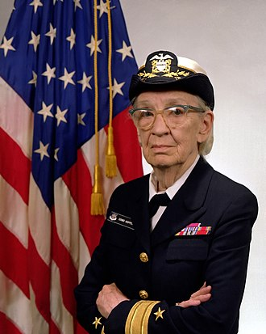

Rear Admiral Grace M. Hopper
Pioneer of computer programming.

Grace M. Hopper, and American computer scientist and a United States navy rear admiral.
Grace Brewster Murray Hopper was an American computer scientist and United States Navy rear admiral. One of the first programmers of the Harvard Mark I computer, she was a pioneer of computer programming who invented one of the first linkers. She popularized the idea of machine-independent programming languages, which led to the development of COBOL, an early high-level programming language still in use today.
Here is a partial timeline of Admiral Hopper's Awards:
- 1964 - Hopper was awarded the Society of Women Engineers Achievement Award, the Society's highest honor, "In recognition of her significant contributions to the burgeoning computer industry as an engineering manager and originator of automatic programming systems.
- 1969 - Hopper was awarded the inaugural Data Processing Management Association Man of the Year award (now called the Distinguished Information Sciences Award).
- 1971 - The annual Grace Murray Hopper Award for Outstanding Young Computer Professionals was established in 1971 by the Association for Computing Machinery.
- 1973 - First American and the first woman of any nationality to be made a Distinguished Fellow of the British Computer Society.
- 1982 - American Association of University Women Achievement Award and an Honorary Doctor of Science from Marquette University.
- 1985 - Honorary Doctor of Letters from Western New England College (now Western New England University).
- 1986 - Upon her retirement, she received the Defense Distinguished Service Medal.
- 1986 - Honorary Doctor of Science from Syracuse University.
- 1987 - The first Computer History Museum Fellow Award Recipient "for contributions to the development of programming languages, for standardization efforts, and for lifelong naval service."